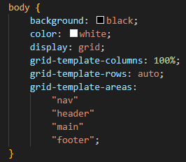

How did I find the module?
In my opinion web development has been a very exciting module with many opportunities to improve my creativity and also problem solving skills. However, there have been some frustrating moments, for example when my code wasn't working and I couldn't figure out why, but that only made me strive to improve and by the end of the day I would learn something new, which I found to be inspiring. HTML and CSS were both incredibly enjoyable languages as I found them to be quite fun to interact with. I really liked the simplicity of HTML and CSS; while they seemed confusing at first, they were much easier to grasp compared to other languages I've been in contact with, such as Python for example.
Design decisions
My main inspiration came from the grid layout we practiced during our lectures at the university. However, I went for a slightly different approach because I just thought it's going to look more organised if I go for a simple grid layout design where everything is placed into one column, which means I have only one semantic field per row. The main purpose of this layout was to enhance user experience as I believe that the simplicity of this design will ensure easier navigation through the pages.
Validation screenshots
Below are all validation screenshots for each HTML and CSS file used in the assignment. As you can see, all the files are valid and contain no errors.
Video demo
Below is the URL link to the video demo just in case it's not accessible for some reason through the Video Demo webpage: